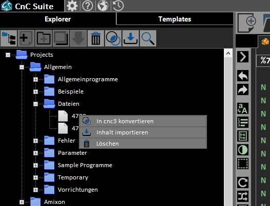

There are different ways to create a new program.
An example video is provided HERE.
This application uses a special filetype (*.cnc3). With this type it is possible to save tags beside the NC-Content. This Tags could be set by using the document-properties box on the right of the editor. The search function could be used to find specific data within the document-properties. Other text-based filetypes can be imported and exported but not managed.
When creating a new file or a new tab and the a general template is set, it will be inserted. The program can be entered with the editor. Templates could be inserted and the content of the editor could be sent via serial interface. Through the document-property window additional descriptions can be defined. Moreover this window shows the date and time of the last modification and opening.
The content of text-based files can be imported with the import function via toolbar or context-menu of the explorer. Also the the content of the editor can be set via drag & drop or cnc3 files can be opened this way.
Another possibility is to convert foreign files with the context-menu of the explorer. Included is the option to keep the old file or to delete it after conversion.